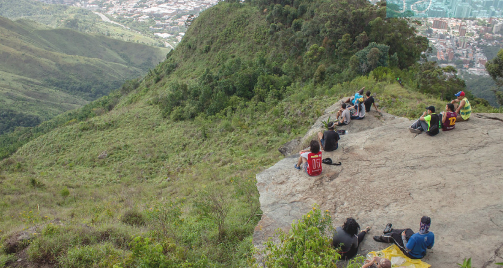
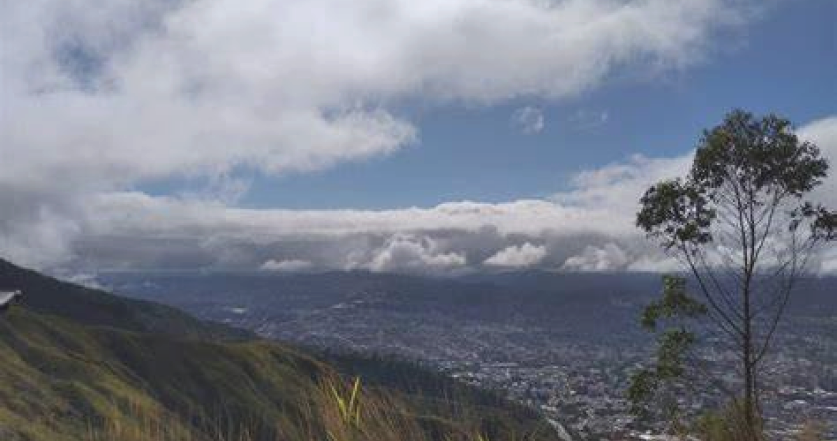

6,3km • Est. 2h 38min
Cupos disponibles: 24
Famosa por su formación rocosa erosionada que simula el perfil de un rostro indígena, esta ruta combina mitos locales y naturaleza. El sendero atraviesa bosques densos con árboles de caoba y samanes, y pasa por pequeñas cascadas como "El Salto del Silencio". Ideal para fotógrafos y amantes de la geología.